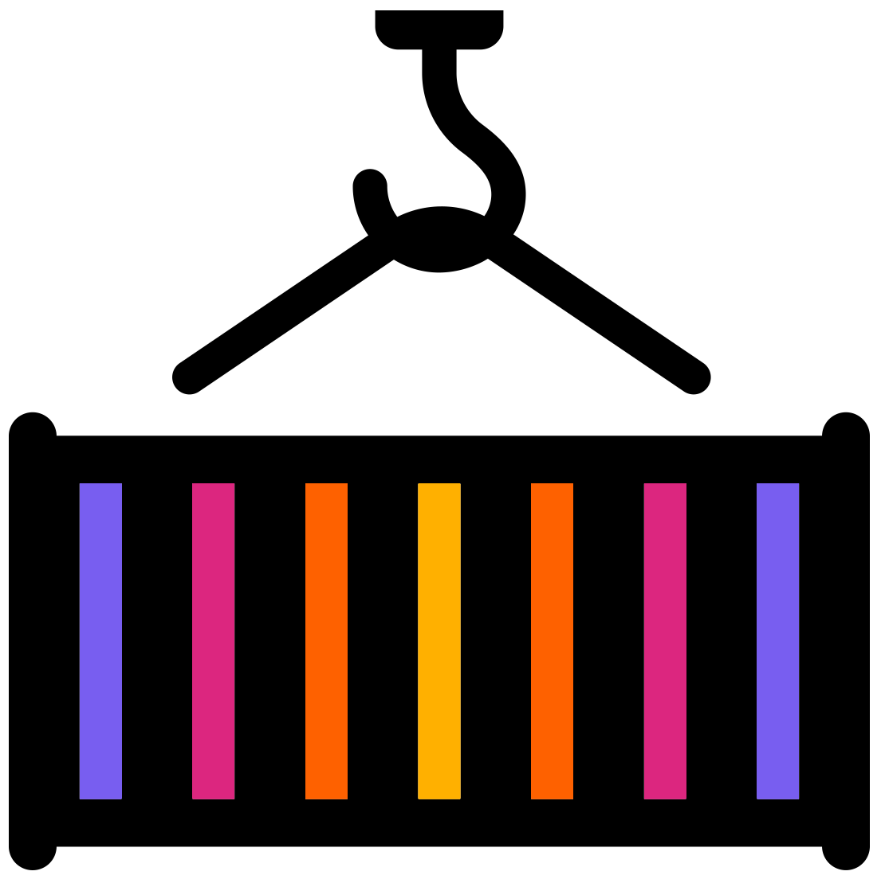
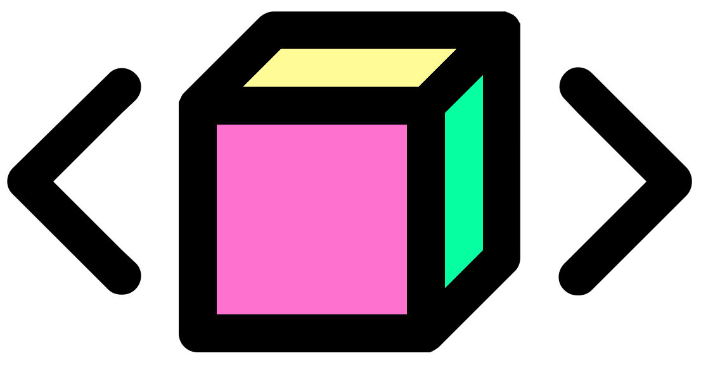
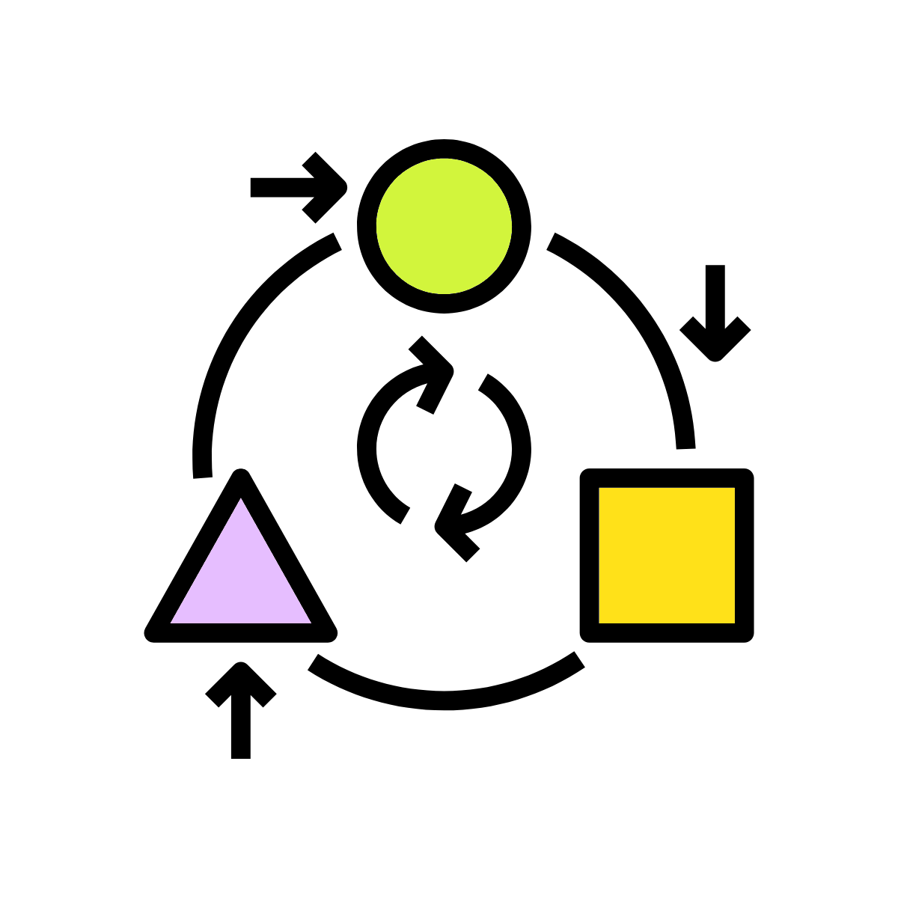

6 Python Fundamentals

This chapter covers some of the fundamental concepts of scripting in Python. An understanding of how to use operators, variables, and functions will give a good grounding in how the language works and allow you to develop your own methods and code.
You definitely do not need to memorise all the information here as all of these concepts will be explored more in the rest of the tutorial. The best way to learn how various aspects of the Python language works is by doing rather than by reading.
Consider coming back to this page later if you want to remind yourself of how a particular operator works or how to define a function.
We'll continue to use our "01-Fundamentals" notebook. Within it create a new Markdown cell with the following headers:
6.1 Operators

Python allows the use of the usual arithmetic operators and follows the traditional rules of mathematical precedence (BODMAS).
The main mathematical operators are:
+(addition)-(subtraction)*(multiplication)/(division)**(power/exponent)//(Floor division)%(modulo operator. Find the remainder after dividing 2 numbers)
For each code block below create a code cell, enter the code, and run it. This will demonstrate the code output and give you some practice.
For convenience you can can create a bunch of empty cells and then use the up and down arrow keys to move to other cells. This requires knowing the two different interaction modes.
- esc mode: This mode allows you to move up and down between cells. You are in esc mode if the highlighted border of your current cell is blue (leftside) and grey.
- command mode: This mode allows you to type in the cell. You are in command mode if the highlighted border of your current cell is green.

Press enter when on a cell in esc mode to enter command mode. This allows you to start typing in the selected cell.
When you run code (ctrl + enter) in command mode you will then enter esc mode.
Be careful! If you press a number key whilst in esc mode you will change the cell to a markdown cell. Additionally, you will change the first line to a header line equal to the number you pressed. I.e. if you pressed 2, the following would be added to the start of the first line of the cell: ##.
6.3 Variables

Variables are used to store information which can then be referenced or manipulated later. It is useful to label data with descriptive names which are easily read by humans. You can think of a variable as a 'container' to hold a piece of information.
Variables are assigned a value using the equals (=) character.
Variable name rules:
- Must start with either a letter or an underscore
- Cannot start with a number.
- Must only contain alphanumeric characters (and underscores)
- No punctuation such as full stops, quotes, commas, colons, etc are allowed.
- They are case sensitive.
Python supports several classes (or types) of variables including strings, integers, floats, and booleans.
In a new Markdown cell add the following:
6.3.1 Strings

Strings are used to store alphanumeric text. A string is defined by enclosing the text with either single ('text') or double quotes ("text").
In the below code we define two string variables, and then retrieve them again by using their name, or identifier.
As before, for each code block below create a code cell, enter the code, and run it. Do this for all future code examples.
#Assign string variables
DNA_string = "GCACAAACC"
amino_acids = "ARG VAL TRP"
#Call the DNA_string variable
DNA_stringYou will notice that you can use your variables in the same cell you created it in, or in a different cell. As long as you have run the code that creates/assigns the variable you can use it elsewhere in the same notebook.
6.3.2 Integers
Integers are used to store whole numbers. These should not be declared with quote marks otherwise they will be stored as a string.
Create the following markdown cell:
Create and run the following code cells:
6.3.3 Floats (floating point numbers)

Floating point numbers are used to store real numbers (I.e. a number written with a decimal point dividing the integer and the fractional parts).
Create a new markdown cell with the following:
Run the following code:
6.3.4 Booleans

Booleans are a special type of variable that can represent one of two values: True or False. You can compare any two values in Python and get a result of either True or False.
- To check if two values are equal we use double equals:
== - To check if two values are not equal we use:
!= - Greater than (
>) or less than (<) also work.
Create a new markdown cell with the following:
Run the following code:
6.4 Classes of variable

Every variable in Python has a class. These are the characteristics we described above:
- String (
<class 'str'>) - Integer (
<class 'int'>) - Float (
<class 'float'>) - Boolean (
<class 'bool'>)
Unlike some other languages, you do not need to tell Python which class a variable should have. Python will try to figure it out based on the value assigned.
Create a new markdown cell with the following:
You can check the class of a variable by passing it to the type() function:
6.5 Transforming variables

Variables can be transformed from one class/type to another provided the value can be coerced into the new data type (I.e. you could not transform a string of text to a floating point number).
Create a new markdown cell with the following:
To transform a float to an integer use the int() function (note the loss of precision):
To transform an integer to a string use the str() function:
You can transform a numeric string to an integer:
You can also transform to a floating point using float():
6.6 Why so many code cells?
We are using a code cell per piece of code that gives an output. We do this as jupyter-notebook will normally only show the last output from a code cell.
Create and run the below code cells to see this in action.
However, you can use the print() function to bypass this.
The output from every single print() function will be printed in jupyter-notebook.
Try it out with the below single code cell:
This is essential when writing longer pieces of code that need multiple outputs.
In this book we will stick with the multiple code cells approach as we find it easier than having to use print() constantly.
However, if you prefer using fewer code cells and more print() functions please feel free to do so.
6.7 Fundamentals MCQ recap

Brilliant! That is the end of this chapter. Have you saved your notebook? It is good practice to save it regularly.
Choose the correct option to complete each sentence below:
- All variables have a ________.
- The hashtag (
#) can be used to add ________ to code. - Quotes ('single' or "double") are used to create ________ variables.
- ________ is a numeric class which does not contain decimal points (whole numbers).
- ________ is a numeric class which does contain decimal points (real numbers).
- ________ is a class that stores
TrueorFalse.
6.2 Comments/Annotations
It is often useful to include human-readable comments in your scripts and code. Comments/Annotations in Python are indicated by the hash symbol (
#). Anything to the right of the hash is considered a comment and is ignored by the interpreter.Create a new Markdown cell with the following.
In a new cell, enter and run the below.
Only the
print()command is used by the python interpreter. The other text is ignored due to the hashtags. You will also notice that the text of comments/annotations are uniquely coloured injupyter-notebook. This is useful to quickly see what are parts of comments and not.